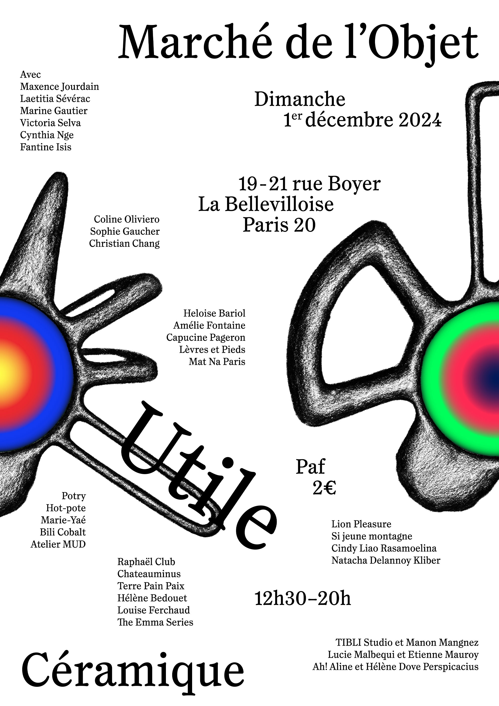
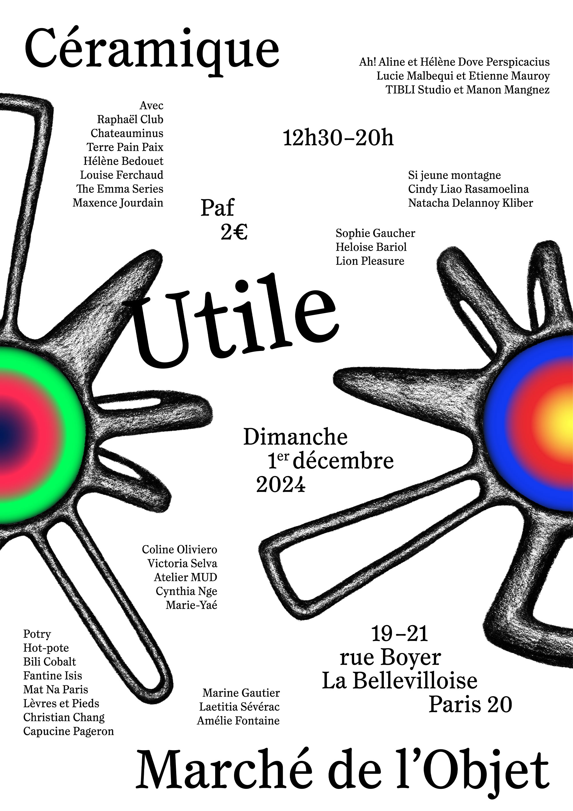
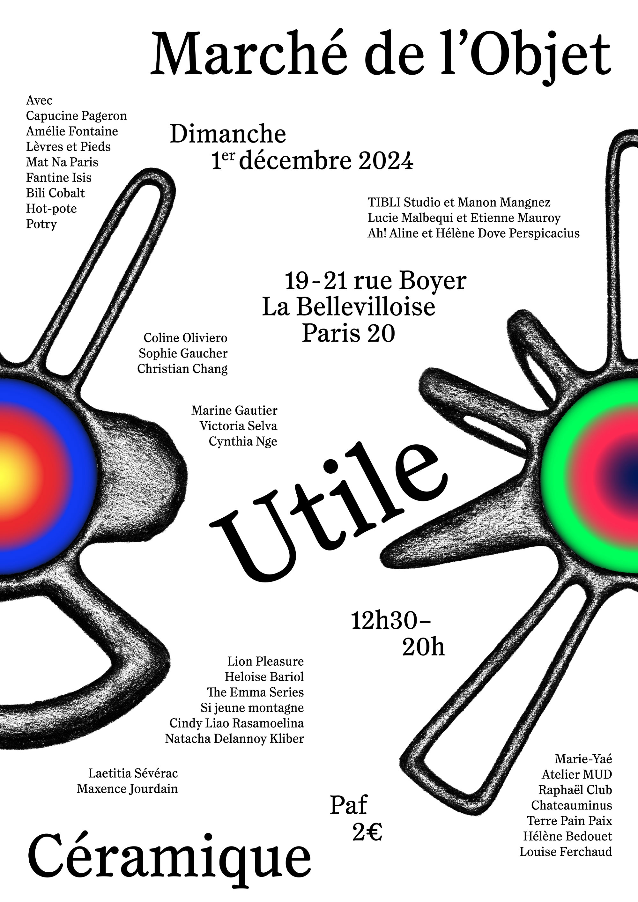
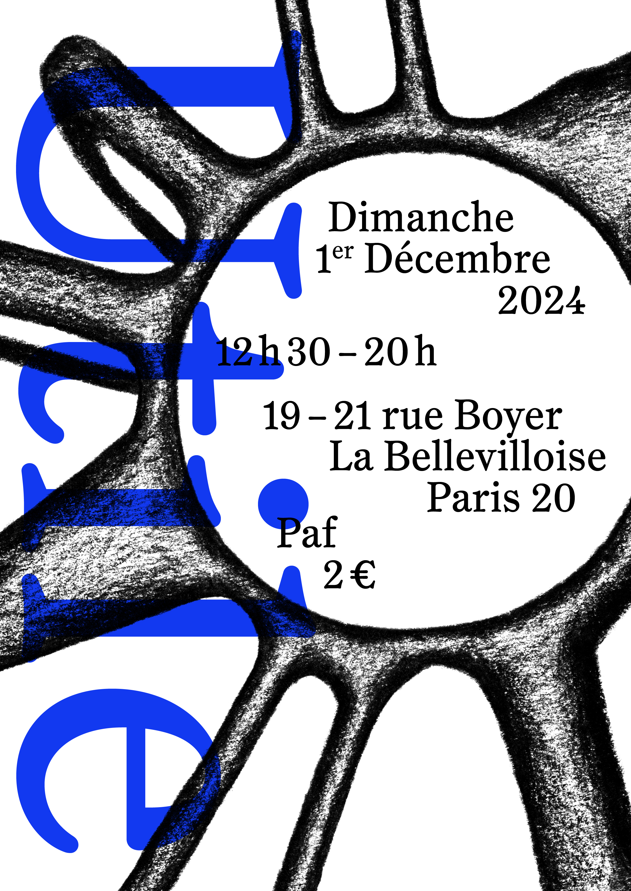
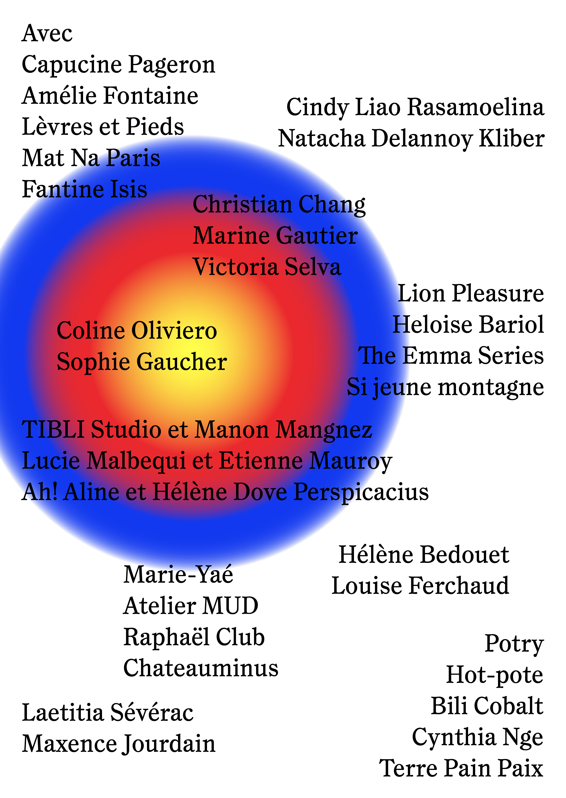
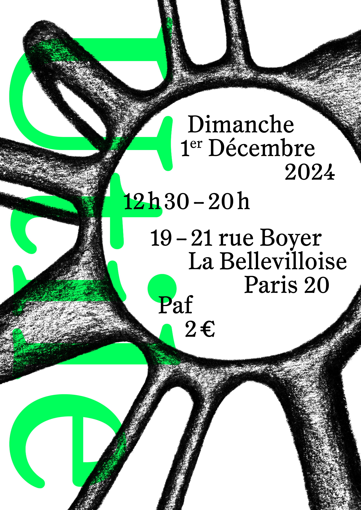
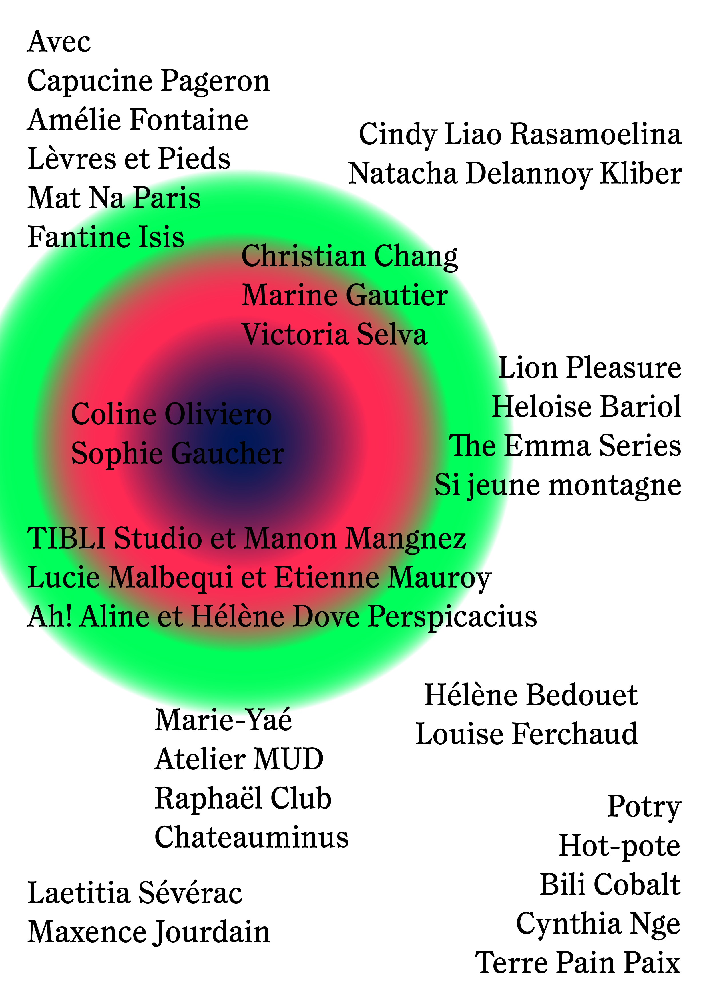

2025
Construire l'identité graphique pour le Marché de l'Objet Céramique
«Utile»
sur des supports imprimés et numériques. Utile propose une sélection
d'artistes qui, au-delà de leurs céramiques, ont une démarche poétique,
transgressive.
Une forme hybride traduit la multiplicité d'approches
de la céramique
par les artistes. Leurs noms, tout comme les informations
pratiques, circulent
à travers l'espace de la page. Enfin le mouvement circulaire
induit par les anneaux
de couleurs vibrantes évoque le tour de potier.
Affiches
Format: 29,7x42cm



Déclinaisons en flyer
Format: 14,8x21cm




Déclinaisons Instagram
Format: 1:1